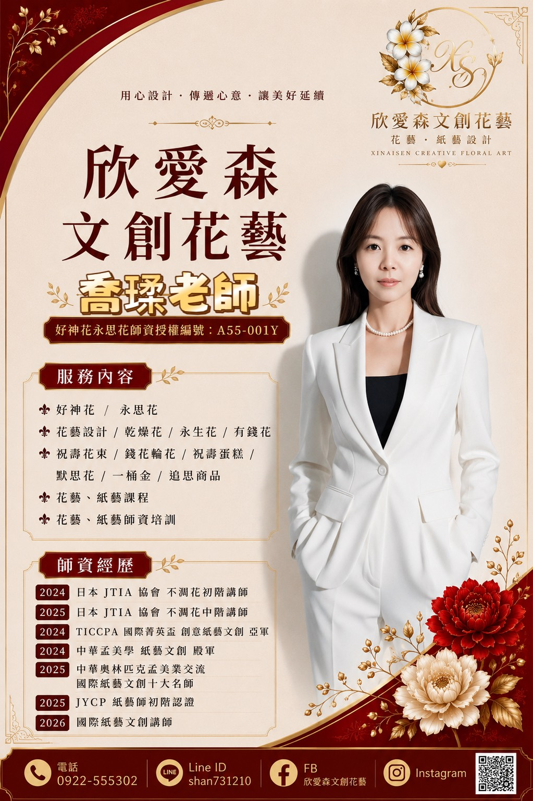

OUR STORY
以欣喜相遇，
以愛意成花，
在自然裡成森。
「欣愛森」是一間相信情感、文化與自然能彼此呼應的文創花藝工作室。我們珍惜花材與紙材原本的姿態，也在意每一份委託背後的故事。
不追求相同的答案，而是在一次次傾聽與創作中，找到只屬於你的花之風景。

OUR STORY
「欣愛森」是一間相信情感、文化與自然能彼此呼應的文創花藝工作室。我們珍惜花材與紙材原本的姿態，也在意每一份委託背後的故事。
不追求相同的答案，而是在一次次傾聽與創作中，找到只屬於你的花之風景。